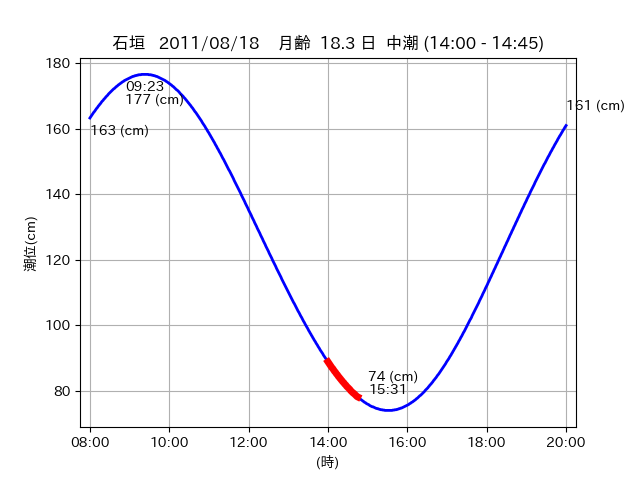
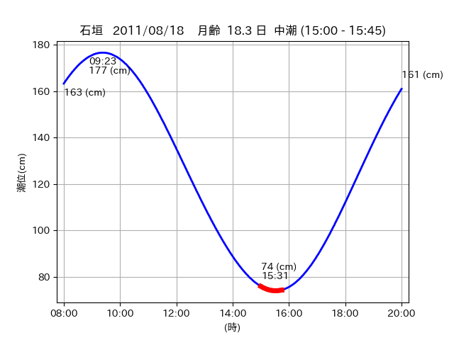

<!DOCTYPE html>
<html>
<head>
    
    <meta http-equiv="content-type" content="text/html; charset=UTF-8" />
    
        <script>
            L_NO_TOUCH = false;
            L_DISABLE_3D = false;
        </script>
    
    <style>html, body {width: 100%;height: 100%;margin: 0;padding: 0;}</style>
    <style>#map {position:absolute;top:0;bottom:0;right:0;left:0;}</style>
    <script src="https://cdn.jsdelivr.net/npm/leaflet@1.9.3/dist/leaflet.js"></script>
    <script src="https://code.jquery.com/jquery-3.7.1.min.js"></script>
    <script src="https://cdn.jsdelivr.net/npm/bootstrap@5.2.2/dist/js/bootstrap.bundle.min.js"></script>
    <script src="https://cdnjs.cloudflare.com/ajax/libs/Leaflet.awesome-markers/2.0.2/leaflet.awesome-markers.js"></script>
    <link rel="stylesheet" href="https://cdn.jsdelivr.net/npm/leaflet@1.9.3/dist/leaflet.css"/>
    <link rel="stylesheet" href="https://cdn.jsdelivr.net/npm/bootstrap@5.2.2/dist/css/bootstrap.min.css"/>
    <link rel="stylesheet" href="https://netdna.bootstrapcdn.com/bootstrap/3.0.0/css/bootstrap-glyphicons.css"/>
    <link rel="stylesheet" href="https://cdn.jsdelivr.net/npm/@fortawesome/fontawesome-free@6.2.0/css/all.min.css"/>
    <link rel="stylesheet" href="https://cdnjs.cloudflare.com/ajax/libs/Leaflet.awesome-markers/2.0.2/leaflet.awesome-markers.css"/>
    <link rel="stylesheet" href="https://cdn.jsdelivr.net/gh/python-visualization/folium/folium/templates/leaflet.awesome.rotate.min.css"/>
    
            <meta name="viewport" content="width=device-width,
                initial-scale=1.0, maximum-scale=1.0, user-scalable=no" />
            <style>
                #map_54773affac6031df9f57c1b026119554 {
                    position: relative;
                    width: 2048.0px;
                    height: 1600.0px;
                    left: 0.0%;
                    top: 0.0%;
                }
                .leaflet-container { font-size: 1rem; }
            </style>
        
</head>
<body>
    
    
            <div class="folium-map" id="map_54773affac6031df9f57c1b026119554" ></div>
        
</body>
<script>
    
    
            var map_54773affac6031df9f57c1b026119554 = L.map(
                "map_54773affac6031df9f57c1b026119554",
                {
                    center: [24.595, 124.355],
                    crs: L.CRS.EPSG3857,
                    ...{
  "zoom": 12,
  "zoomControl": true,
  "preferCanvas": false,
}

                }
            );

            

        
    
            var tile_layer_27c710a36ad84e6de5b4d07a3d816c9b = L.tileLayer(
                "https://cyberjapandata.gsi.go.jp/xyz/seamlessphoto/{z}/{x}/{y}.jpg",
                {
  "minZoom": 0,
  "maxZoom": 18,
  "maxNativeZoom": 18,
  "noWrap": false,
  "attribution": "\u5730\u7406\u9662\u5730\u56f3",
  "subdomains": "abc",
  "detectRetina": false,
  "tms": false,
  "opacity": 1,
}

            );
        
    
            tile_layer_27c710a36ad84e6de5b4d07a3d816c9b.addTo(map_54773affac6031df9f57c1b026119554);
        
    
            var marker_2a3120252371b91474bbb3a4ff6aaafa = L.marker(
                [24.5583, 124.3377],
                {
}
            ).addTo(map_54773affac6031df9f57c1b026119554);
        
    
            var icon_dc1e6709cebd0698de963a053121c357 = L.AwesomeMarkers.icon(
                {
  "markerColor": "orange",
  "iconColor": "white",
  "icon": "info-sign",
  "prefix": "glyphicon",
  "extraClasses": "fa-rotate-0",
}
            );
        
    
        var popup_fbfeaa6a0a221be908e01d6dcaefa163 = L.popup({
  "maxWidth": "100%",
});

        
            
                var html_5c922817cea889a8882c7567a673b30f = $(`<div id="html_5c922817cea889a8882c7567a673b30f" style="width: 100.0%; height: 100.0%;"><table><tr><td></td></tr><tr><td><center>20110818 No.1 </center></table></td></tr></table</div>`)[0];
                popup_fbfeaa6a0a221be908e01d6dcaefa163.setContent(html_5c922817cea889a8882c7567a673b30f);
            
        

        marker_2a3120252371b91474bbb3a4ff6aaafa.bindPopup(popup_fbfeaa6a0a221be908e01d6dcaefa163)
        ;

        
    
    
                marker_2a3120252371b91474bbb3a4ff6aaafa.setIcon(icon_dc1e6709cebd0698de963a053121c357);
            
    
            var poly_line_c8ae3efc70b347de6379303451bd2da0 = L.polyline(
                [[24.5583, 124.3377], [24.563, 124.3427]],
                {"bubblingMouseEvents": true, "color": "#FF00FF", "dashArray": null, "dashOffset": null, "fill": false, "fillColor": "#FF00FF", "fillOpacity": 0.2, "fillRule": "evenodd", "lineCap": "round", "lineJoin": "round", "noClip": false, "opacity": 1.0, "smoothFactor": 1.0, "stroke": true, "weight": 3}
            ).addTo(map_54773affac6031df9f57c1b026119554);
        
    
            var marker_bd5ef4fb526d8fb6bfac75cad8f04e5f = L.marker(
                [24.568, 124.3482],
                {
}
            ).addTo(map_54773affac6031df9f57c1b026119554);
        
    
            var icon_4069625fafc0d4afb96856c235f4c886 = L.AwesomeMarkers.icon(
                {
  "markerColor": "orange",
  "iconColor": "white",
  "icon": "info-sign",
  "prefix": "glyphicon",
  "extraClasses": "fa-rotate-0",
}
            );
        
    
        var popup_b6709fe4d530e1eda8cf3b4de2a4622c = L.popup({
  "maxWidth": "100%",
});

        
            
                var html_e4e9a12a6a6eb757a8ffd50170733d71 = $(`<div id="html_e4e9a12a6a6eb757a8ffd50170733d71" style="width: 100.0%; height: 100.0%;"><table><tr><td></td></tr><tr><td><center>20110818 No.2 </center></table></td></tr></table</div>`)[0];
                popup_b6709fe4d530e1eda8cf3b4de2a4622c.setContent(html_e4e9a12a6a6eb757a8ffd50170733d71);
            
        

        marker_bd5ef4fb526d8fb6bfac75cad8f04e5f.bindPopup(popup_b6709fe4d530e1eda8cf3b4de2a4622c)
        ;

        
    
    
                marker_bd5ef4fb526d8fb6bfac75cad8f04e5f.setIcon(icon_4069625fafc0d4afb96856c235f4c886);
            
    
            var poly_line_de4834f3d94af2068d9beb5ec6451928 = L.polyline(
                [[24.568, 124.3482], [24.5663, 124.348]],
                {"bubblingMouseEvents": true, "color": "#00FFFF", "dashArray": null, "dashOffset": null, "fill": false, "fillColor": "#00FFFF", "fillOpacity": 0.2, "fillRule": "evenodd", "lineCap": "round", "lineJoin": "round", "noClip": false, "opacity": 1.0, "smoothFactor": 1.0, "stroke": true, "weight": 3}
            ).addTo(map_54773affac6031df9f57c1b026119554);
        
    
            var marker_94b4777dfbf6967595caa4a35b791c44 = L.marker(
                [24.5924, 124.3561],
                {
}
            ).addTo(map_54773affac6031df9f57c1b026119554);
        
    
            var icon_4439588a77c7228a538d6fda4e151279 = L.AwesomeMarkers.icon(
                {
  "markerColor": "orange",
  "iconColor": "white",
  "icon": "info-sign",
  "prefix": "glyphicon",
  "extraClasses": "fa-rotate-0",
}
            );
        
    
        var popup_e76b69fd6ac05700661f4dcfac0d17da = L.popup({
  "maxWidth": "100%",
});

        
            
                var html_70080aa598ce4e87b4327b789acea4bc = $(`<div id="html_70080aa598ce4e87b4327b789acea4bc" style="width: 100.0%; height: 100.0%;"><table><tr><td></td></tr><tr><td><center>20110818 No.3 </center></table></td></tr></table</div>`)[0];
                popup_e76b69fd6ac05700661f4dcfac0d17da.setContent(html_70080aa598ce4e87b4327b789acea4bc);
            
        

        marker_94b4777dfbf6967595caa4a35b791c44.bindPopup(popup_e76b69fd6ac05700661f4dcfac0d17da)
        ;

        
    
    
                marker_94b4777dfbf6967595caa4a35b791c44.setIcon(icon_4439588a77c7228a538d6fda4e151279);
            
    
            var poly_line_be8f4a341e5f4f4874b84e5169577f91 = L.polyline(
                [[24.5924, 124.3561], [24.5971, 124.3548]],
                {"bubblingMouseEvents": true, "color": "#FF00FF", "dashArray": null, "dashOffset": null, "fill": false, "fillColor": "#FF00FF", "fillOpacity": 0.2, "fillRule": "evenodd", "lineCap": "round", "lineJoin": "round", "noClip": false, "opacity": 1.0, "smoothFactor": 1.0, "stroke": true, "weight": 3}
            ).addTo(map_54773affac6031df9f57c1b026119554);
        
</script>
</html>